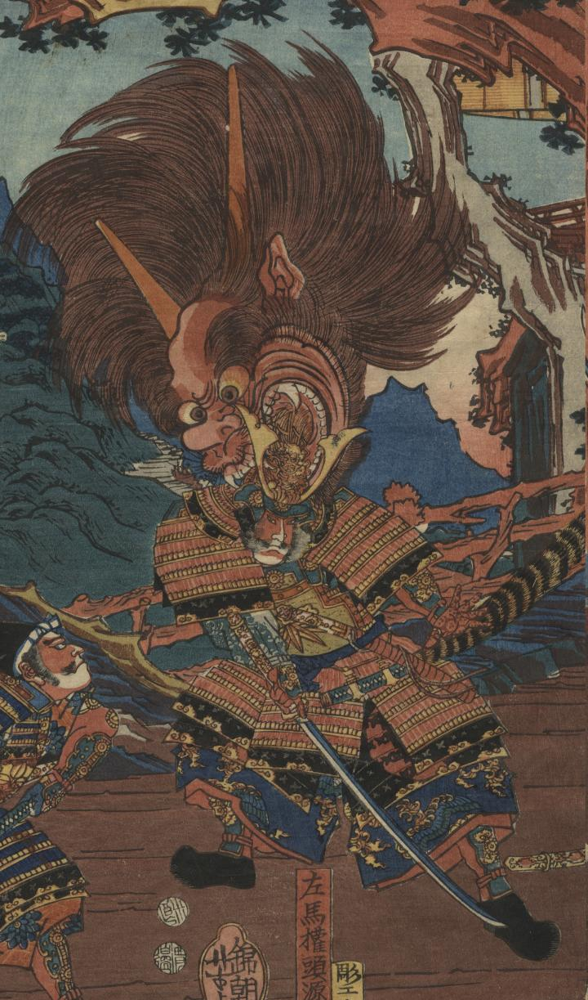

切り落とされた酒呑童子の首が、頼光の兜に噛み付いている。
著作者：錦朝楼芳虎／出典：親書誌：U426_nichibunken_0288：[源頼光酒呑童子退治図]；ミナモト ライコウ シュテン ドウジ タイジ ズ／日付：2014／資源識別子：U426_nichibunken_0288_0001_0000
Copyright (c)2010- International Research Center for Japanese Studies, Kyoto, Japan. All rights reserved.